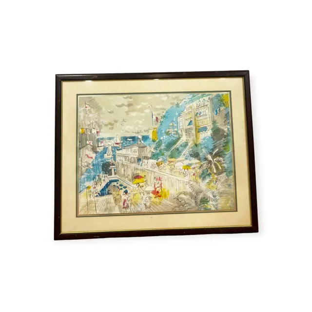
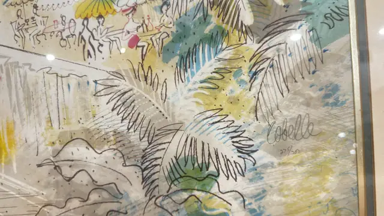
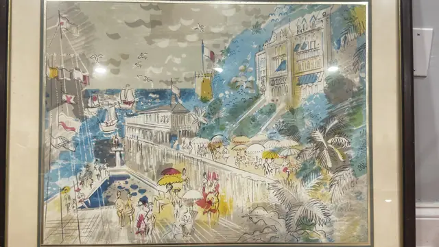
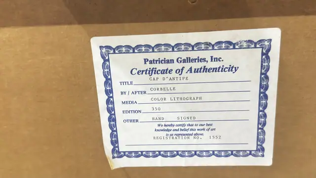

Paintings & Prints
Corbelle Cap d'Antipe Colour Lithograph, Signed, Numbered Edition, Framed
CORBELLE · second half of the 20th century
Price Upon Request




About the Item
CORBELLE. A light, quickly drawn coastal scene: spiky palm fronds and a bare-branched tree are sketched in fine black ink over washes of pale blue, lemon yellow and sea green. Behind them a promenade runs past a colonnaded building and a row of masts and flags, with tiny figures in red, yellow and blue under parasols, and a low headland closing the bay. The paper is left largely open, the wash thin and drippy, giving a sunny, calligraphic feel in the manner of Dufy. Medium: colour lithograph on paper. Signed lower right within the image, in pencil, reading "Corbelle". Edition: 275/350, hand signed (certificate states edition 350). Accompanied by a certificate: Certificate of Authenticity naming the work 'Cap d'Antipe' by/after Corbelle, colour lithograph, edition 350, hand signed, registration no. 1552. Inscribed on the reverse or mount: Corbelle (pencil signature, lower right); 275/350 (pencil, beneath the signature); Patrician Galleries, Inc. Certificate of Authenticity , TITLE: CAP D'ANTIPE / BY / AFTER: CORBELLE / MEDIA: COLOR LITHOGRAPH / EDITION: 350 / OTHER: HAND SIGNED / We hereby certify that to our best knowledge and belief this work of art is as represented above. / REGISTRATION NO. 1552. Condition: No visible damage; sheet clean, mat clean. Strong lamp reflections on the glass.
Details
- Creator:
- CORBELLE
- Creation Year:
- second half of the 20th century
- Dimensions:
- Height: 29.75 in (75.56 cm)
Width: 36.25 in (92.08 cm)
outside of frame - Medium:
- colour lithograph on paper
- Edition:
- 275/350, hand signed (certificate states edition 350)
- Period:
- 20Th
- Condition:
- Offered in the condition shown in the photographs.
- Reference Number:
- VO-223
- Documentation:
- Certificate of Authenticity naming the work 'Cap d'Antipe' by/after Corbelle, colour lithograph, edition 350, hand signed, registration no. 1552.
- Gallery Location:
- Patrician Galleries, Inc.